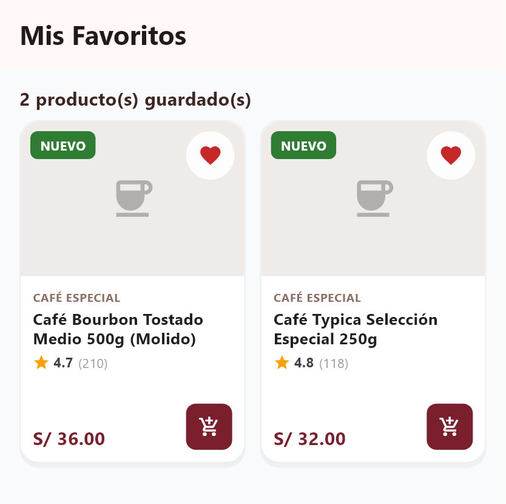
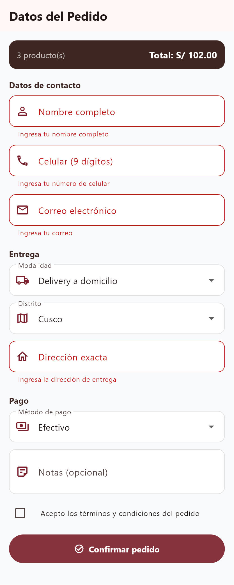

Universidad Nacional de San Antonio Abad del Cusco
Facultad de Ingeniería Eléctrica, Electrónica, Informática y Mecánica
Escuela Profesional de Ingeniería Informática y de Sistemas
Informe Técnico · Unidad II
Estado, Persistencia y Formularios
Evolución de la app «Aroma Sagrado · Cusco»: de una interfaz estática a una aplicación con estado compartido, persistencia local y formularios validados en Flutter
Proyecto Integrador · Grupo 2
Asignatura
Desarrollo de Software II — IF616BIN
Unidad
Unidad II · Estado, persistencia y formularios
Proyecto
Catálogo «Aroma Sagrado» (café y cacao de La Convención)
Integrantes (Grupo 2)
Edmil Jampier Saire Bustamante
Cód. 174449
Alain Armando Condori Contreras
Cód. 021501
Axel Aranibar Rojas
Cód. 220547
Docente
Mtro. Ing. Yover Collantes Valer
Semestre
2026-II
Fecha
23 de octubre de 2026 · Cusco, Perú
Repositorio
https://github.com/Alacops/app_catalogo_grupo2
1.Introducción y Objetivos
1.1. Descripción
En la Unidad I se construyó la interfaz de usuario estática del catálogo «Aroma Sagrado». En esta Unidad II la aplicación evoluciona para incorporar lógica de interacción: se activan los controles que antes eran decorativos (favoritos, carrito, filtros) y se añade un formulario de pedido. Para ello se aplican los tres pilares de la unidad: manejo de estado, persistencia de datos y formularios con validación.
1.2. Objetivos
Gestionar estado compartido (favoritos y carrito) con el paquete provider y ChangeNotifier.
Usar estado local (setState) para la búsqueda y el filtrado del catálogo.
Lograr persistencia local con shared_preferences, de modo que los datos sobrevivan al cierre de la app.
Implementar un formulario de pedido con Form, TextFormField y validaciones.
1.3. Alcance
Alcance. Esta entrega agrega estado, persistencia y formularios sobre la UI existente. No incluye backend remoto ni base de datos en la nube: la persistencia es local en el dispositivo mediante shared_preferences. Los datos del catálogo siguen siendo una lista constante en memoria (CatalogoData).
2.Arquitectura y Organización del Código
Se añadieron las capas providers/ (estado) y se ampliaron models/ y screens/, conservando el principio DRY:
La interfaz lee el estado desde el provider; cuando el usuario actúa, el provider modifica el estado, llama a notifyListeners() (la UI se reconstruye) y guarda en SharedPreferences. Al iniciar, el provider carga el estado persistido.
// carrito_provider.dart (extracto)
class CarritoProvider extends ChangeNotifier {
final Map<String, ItemCarrito> _items = {};
doubleget total =>
_items.values.fold(0.0, (s, i) => s + i.subtotal);
void agregar(Producto p) {
_items.containsKey(p.id) ? _items[p.id]!.cantidad++
: _items[p.id] = ItemCarrito(producto: p);
notifyListeners(); // reconstruye la UI
_guardar(); // persiste el cambio
}
}
3.2. Estado local con setState
El estado efímero de la pantalla de catálogo (categoría y texto de búsqueda) no necesita compartirse: se maneja localmente con setState en un StatefulWidget.
Se usa shared_preferences (almacenamiento clave–valor del dispositivo). Cada provider define su clave y persiste tras cada cambio:
Dato
Clave
Formato
Favoritos
favoritos_ids
Lista de ids (setStringList)
Carrito
carrito_items
JSON de líneas (setString)
4.2. Serialización (toJson / fromJson)
Para guardar el carrito se serializan los objetos a JSON y se reconstruyen al cargar:
// producto.dart
Map<String, dynamic> toJson() => { 'id': id, 'nombre': nombre, ... };
factory Producto.fromJson(Map<String, dynamic> j) => Producto( ... );
// carrito_provider.dart — guardar / cargarawait prefs.setString('carrito_items',
jsonEncode(_items.values.map((i) => i.toJson()).toList()));
final lista = jsonDecode(raw) as List;
for (final e in lista) {
final item = ItemCarrito.fromJson(e);
_items[item.producto.id] = item;
}
4.3. Ciclo de vida del estado persistido
El constructor del provider invoca _cargar() al crearse; cada acción invoca _guardar(). Así, si el usuario agrega productos y cierra la app, al volver a abrirla el carrito y los favoritos siguen ahí (ver Figura 2).
La pantalla de checkout envuelve los campos en un Form controlado por un GlobalKey<FormState>. Al confirmar, validate() ejecuta todos los validator y muestra los mensajes de error.
// Ejemplo: validación del celular
validator: (v) {
final t = (v ?? '').trim();
if (t.isEmpty) return'Ingresa tu número de celular';
if (!RegExp(r'^9\d{8}$').hasMatch(t))
return'Debe tener 9 dígitos y empezar con 9';
returnnull; // válido
}
5.3. Envío y confirmación
Si el formulario es válido, se muestra un diálogo con el resumen del pedido (modalidad, pago, total) y, al aceptar, se vacía el carrito y se regresa al inicio con un aviso de éxito.
6.Resultados y Evidencias

Figura 1.Favoritos persistidos: los productos marcados con ♥ se conservan y se listan en su pantalla (estado + persistencia).Figura 2.Carrito con cantidades (−/+), subtotales y total S/ 102.00; se recalcula y persiste automáticamente.

Figura 3.Formulario de pedido mostrando las validaciones activadas (campos requeridos en rojo), los DropdownButtonFormField de entrega/pago y el resumen del total.
Nota. Los marcadores con ícono de taza sustituyen a las fotografías remotas porque las capturas se generan en un entorno de prueba sin acceso a la red; el estado, los totales, los textos y las validaciones se renderizan de forma fiel. Reproducir: flutter test test/capturas_unidad2_test.dart.
7.Dificultades y Soluciones
Dificultad
Solución
Compartir el carrito/favoritos entre varias pantallas sin repetir lógica
Centralizar en ChangeNotifier + provider (una sola fuente de verdad)
Que la grilla completa se reconstruyera al tocar un solo corazón
Usar context.select para reconstruir únicamente la tarjeta afectada
Persistir objetos complejos del carrito
Serializar con toJson/fromJson + jsonEncode/Decode
Reflejar el conteo del carrito en la barra inferior
Badge alimentado por context.watch
Validar dirección solo cuando aplica
Validación condicional según la modalidad (Delivery/Recojo)
Aprendizaje: distinguir cuándo usar estado local (setState, efímero) frente a estado compartido (provider, de app) fue el concepto más valioso de la unidad.
8.Conclusiones
Se integraron correctamente los tres pilares: estado (provider/ChangeNotifier + setState), persistencia (shared_preferences) y formularios (Form + validación).
La app pasó de ser una vitrina estática a una experiencia interactiva: favoritos, carrito y pedido funcionales que sobreviven al cierre.
El uso de provider mantuvo el código limpio y escalable, separando UI y lógica de estado.
Mejoras futuras: autenticación, sincronización con un backend (Supabase/Firebase) e historial de pedidos.
9.Anexos
Anexo A — Código fuente. Repositorio: https://github.com/Alacops/app_catalogo_grupo2
Anexo B — Autoevaluación (20 puntos)
Criterio
Evidencia
Puntaje
Manejo de estado
provider + ChangeNotifier (favoritos/carrito) y setState (búsqueda/filtros); consumo con select/watch/read.
5 / 5
Persistencia
shared_preferences con claves dedicadas; serialización JSON; datos sobreviven al cierre.
5 / 5
Formularios y validación
Form + GlobalKey, TextFormField/Dropdown, inputFormatters, validaciones (incl. condicional) y confirmación.
5 / 5
UX y navegación
BottomNavigationBar + IndexedStack, Badges, estados vacíos y mensajes (SnackBar/diálogo).
3 / 3
Calidad y documentación
flutter analyze sin incidencias, código comentado, informe y capturas.
2 / 2
TOTAL
20 / 20
UNSAAC · Ingeniería Informática y de Sistemas · Desarrollo de Software II (IF616BIN) · Grupo 2 · Unidad II · 2026-II